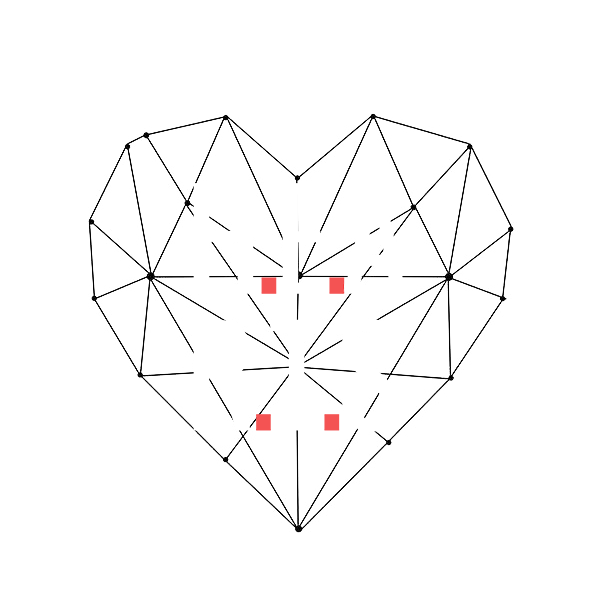

Loading...

H.E.Arts stands for High Emotional Arts.
Based on the "Geneva Wheel", is designed to record the emotional journey of a visitor to a museum.
H.E.Arts transform an emotional journey into a personalized and creative data visualization.
You will find a list of emotions, grouped into four key areas.
Drag the image to go to the next work and so on to the last one, until you cans select the "result":
Water is the basis of life the origin and future of life.
Scientific research discovered that can gives life even in the most extreme enviroments, as the underground sources.
AQVAM is a 2D and 3D system developed to show microbiotic ecosystems cycles in three of the phases of the water purification:
source, filtration and chlorination.
Water is a central element in the myths and cults of all cultures.
In this environment, scientific data harmonizes with emotional and spiritual sensitivity.
An invitation to reflect on the importance of safeguarding this fundamental resource.